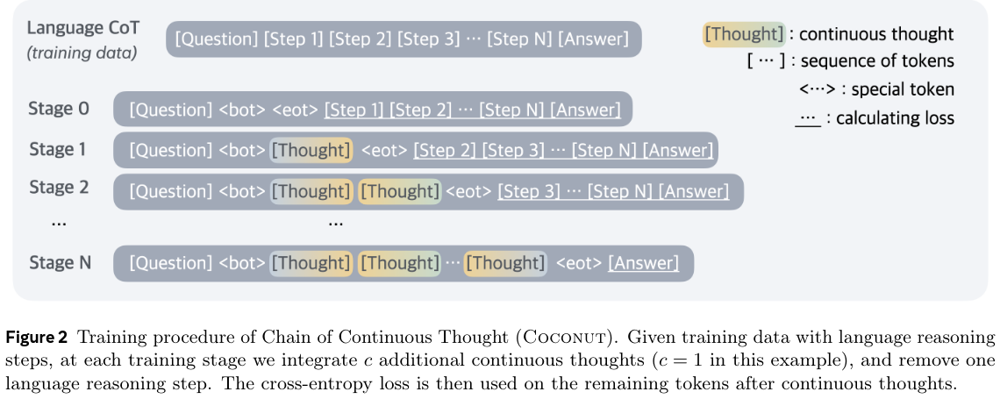

Training Large Language Models to Reason in a Continuous Latent Space
- 2 modes: language model and latent mode
- use <bot> and <eot> tokens to demarcate thoughts
\(E_t=[e(x_1), e(x_2), ..., e(<bot>), h_i, h_{i+1}, ..., h_{j-1}, e(<eot>), ..., e(x_t)]\)

- \(n + 1\) forward passes on each stage
- no training loss for latent thoughts, so hard to parallelize training?
- decomposes training into easier objectives
<bot> and <eot> tokens<eot> token? Two options
Train at final stage for 50 epochs, use validation loss to select
iCoT?
What are pause tokens?
<pause> or ..., that improve performance on some tasksdon’t really speculate on GSM8k result
on “highly branching” and random ProsQA, CoT doesn’t really improve over No-CoT -> latent reasoning good
transformers for inference
- you’ll notice there are many dead ends
Labels and Paths depend on length of continuous and NL thoughtsCorrect Path and Correct Label increase” \(\rightarrow\) better latent space reasoning
k latent thoughts, they analyze next step probabilities for child or grandchild nodes
- x-axis is percentile of test cases
- “can encode several potential reasoning steps simultaneously and progressively eliminate incorrect paths”
- they refer to another paper laying the groundwork for distributional reasoning